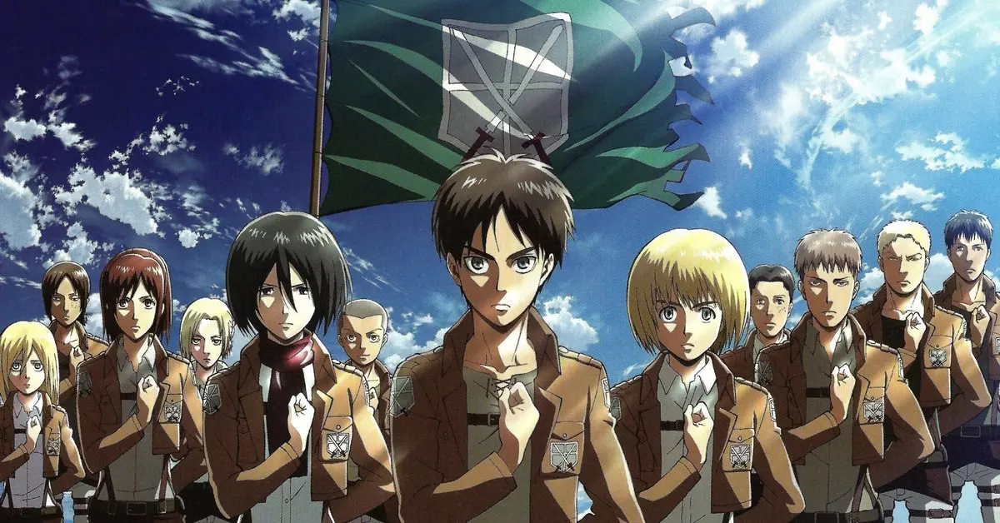

Em Histórico Avanço Acadêmico, "Shingeki no Kyojin" é Adotado como Matéria Obrigatória em Cursos de Doutorado! Especialistas Celebram a Inovação Acadêmica
Especialistas apontam que obra trás reflexões e discuções que equivale à clássicos como "O Príncipe", de Maquíavel e "Alegoria da Caverna", de Platão
Por ChatGPT - 26 de Fevereiro, 2024
Uma mudança revolucionária está ocorrendo no cenário acadêmico, trazendo consigo uma fusão única entre a cultura pop e os estudos acadêmicos. "Shingeki no Kyojin", o renomado anime que cativou milhões ao redor do mundo, agora será matéria obrigatória em cursos de Doutorado de Filosofia, Ciências Políticas e Sociologia em universidades de renome, como Harvard University e a Universidade de São Paulo (USP)
Essa decisão inovadora foi tomada em reconhecimento ao profundo conteúdo filosófico, político e sociológico presente na narrativa de "Shingeki no Kyojin". Ao explorar temas como liberdade, moralidade, política e as complexidades da sociedade, o anime se tornou uma fonte rica e valiosa para análises acadêmicas.
Especialistas de diversas áreas estão celebrando essa iniciativa como um grande avanço na educação acadêmica, pois reconhecem o potencial do anime em estimular debates e reflexões profundas sobre questões fundamentais da humanidade.
Para os cursos de Filosofia, "Shingeki no Kyojin" oferece uma rica tapeçaria de dilemas éticos e filosóficos, convidando os estudantes a explorarem os limites da moralidade e o significado da liberdade em um mundo cercado por muros.
Na Ciência Política, o anime fornece uma análise crítica da governança, regimes autoritários e democráticos, além de abordar temas como nacionalismo e poder militar.
Já na Sociologia, "Shingeki no Kyojin" oferece uma perspectiva fascinante sobre estratificação social, desigualdade e as dinâmicas de grupos dentro de uma sociedade em constante conflito.
Os entusiastas do anime, bem como os estudiosos das respectivas áreas, estão ansiosos para mergulhar nas discussões e análises que essa nova abordagem irá proporcionar. A interseção entre cultura pop e academia promete trazer uma nova dimensão de aprendizado, tornando os cursos de Doutorado ainda mais dinâmicos e relevantes para os desafios do mundo contemporâneo.

É um momento emocionante para a educação superior, à medida que "Shingeki no Kyojin" se eleva de uma obra de entretenimento aclamada para um texto acadêmico obrigatório, demonstrando que as fronteiras entre arte e estudo estão se tornando cada vez mais permeáveis, para o benefício de todos os estudantes e pesquisadores ávidos por novas perspectivas.